Publications
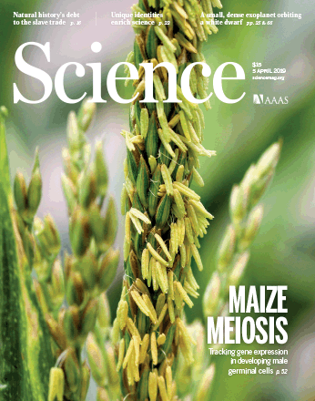
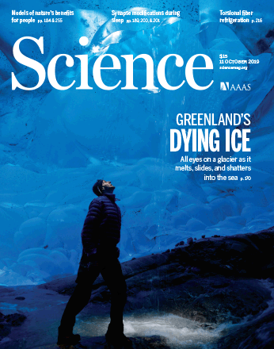+ T cells for tissue-resident memory fate."
/>
 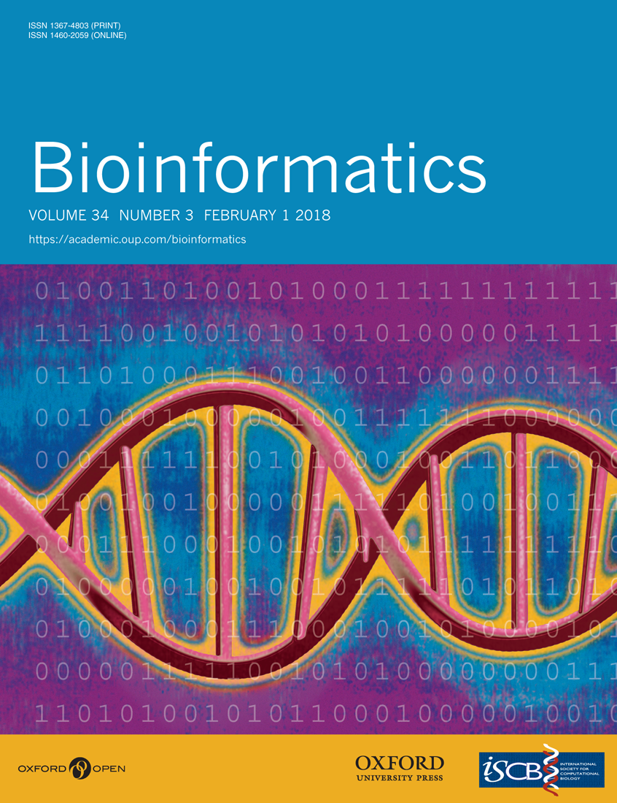
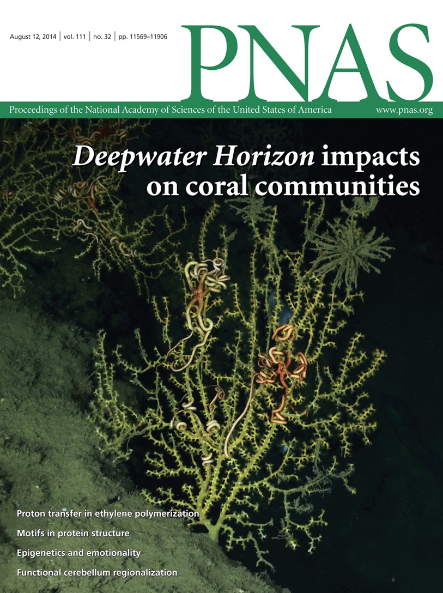
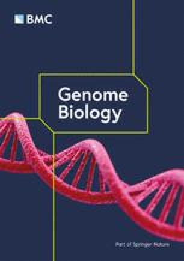
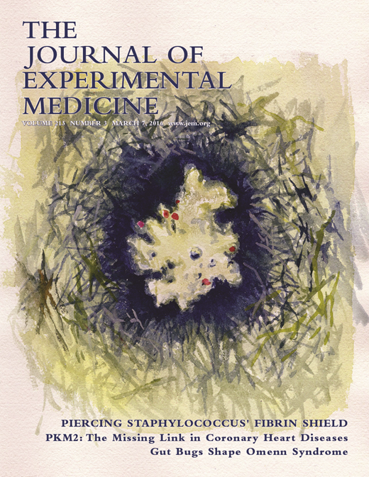
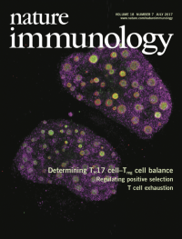+ T cell function in chronic viral infection."
/>
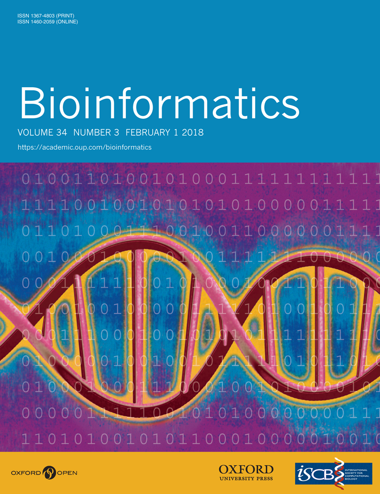
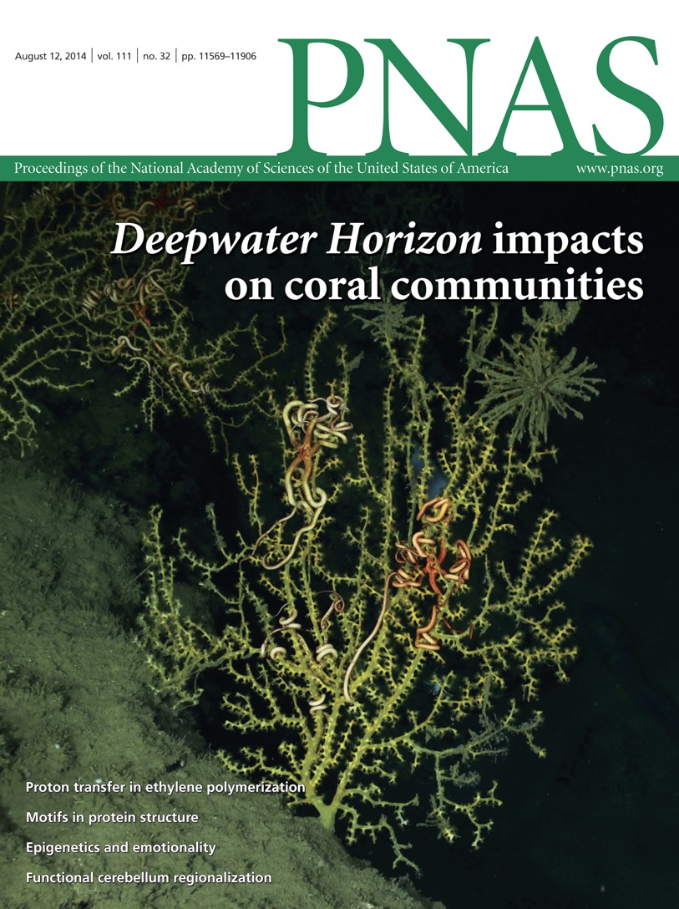
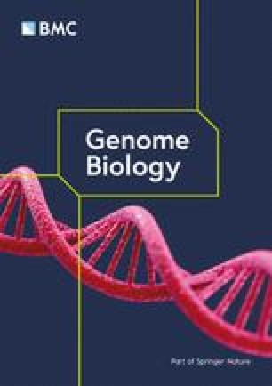
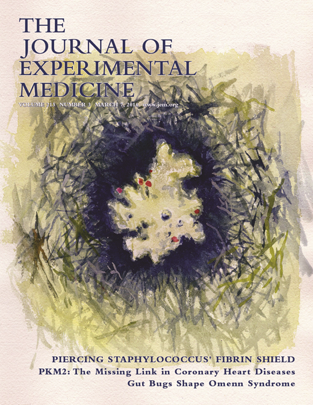
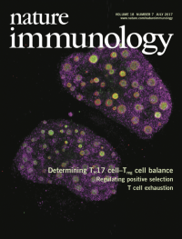+ T cell function in chronic viral infection."
/>
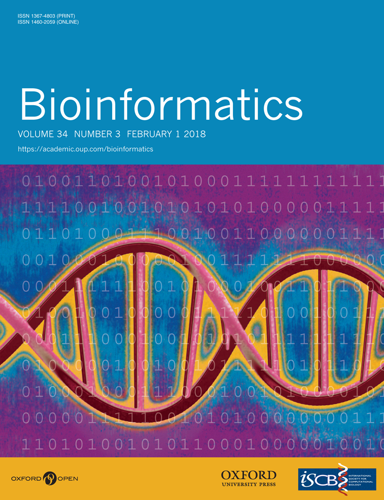
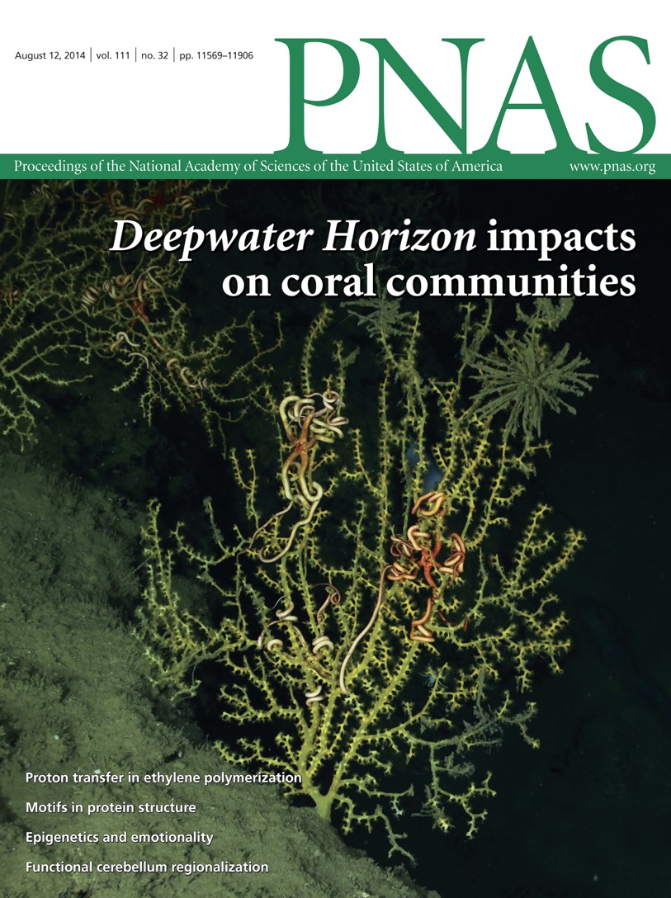
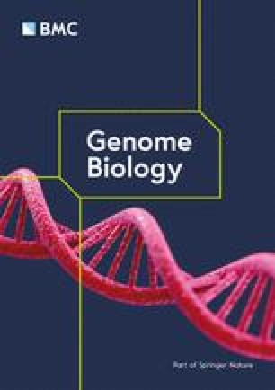
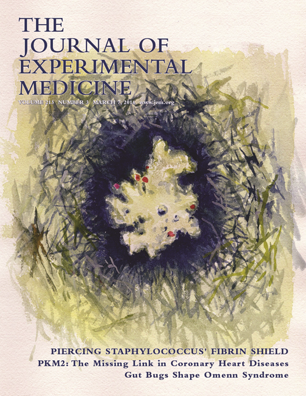
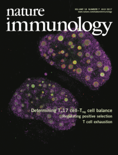+ T cell function in chronic viral infection."
/>
Peer-reviewed journal articles
- Daly AC, Cambuli F, Äijö T, Lötstedt B, Marjanovic ND, Fernandez S, Kuksenko O, Smith-Erb M, Domovic D, Van Wittenberghe N, Drokhlyansky E, Griffin GK, Phatnani H, Bonneau R, Regev A, Vickovic S (2025) Tissue and cellular spatiotemporal dynamics in colon aging. Nat Biotechnol ():
- Äijö T, Gioulbasani M, Valenzuela JE, Tsagaratou A (2025) Assessing the impact of TET2 and TET3 deletion in TCRalpha and TCRbeta repertoire in murine CD4 T cells in physiological and pathophysiological conditions. Front Immunol 16():1638500
- Gioulbasani M, Äijö T, Liu S, Montgomery SA, Montgomery ND, Corcoran D, Tsagaratou A (2024) Concomitant loss of TET2 and TET3 results in T cell expansion and genomic instability in mice. Commun Biol 7(1):1606
- Gioulbasani M, Äijö T, Valenzuela JE, Bettes JB, Tsagaratou A. (2024) TET proteins regulate Drosha expression and impact microRNAs in iNKT cells. Front Immunol 15: 1440044
- Theofilatos D, Ho T, Waitt G, Äijö T, Schiapparelli LM, Soderblom EJ, Tsagaratou A (2024) Deciphering the TET3 interactome in primary thymic developing T cells. iScience 27(5):109782
- Äijö T, Elgort D, Becker M, Herzog R, Brown RKJ, Odry BL, Vianu R (2024) Improving the Reliability of Peer Review Without a Gold Standard. J Imaging Inform Med 37(2):489-503
- Theofilatos D, Äijö T, Tsagaratou A. (2022) Protocol to isolate mature thymic T cell subsets using fluorescence-activated cell sorting for assessing gene expression by RNA-seq and transcription factor binding across the genome by CUT&RUN. STAR Protoc 3: 101839
- Äijö T, Theofilatos D, Cheng M, Smith MD, Xiong Y, Baldwin AS, Tsagaratou A. (2022) TET proteins regulate T cell and iNKT cell lineage specification in a TET2 catalytic dependent manner. Front Immunol 13: 940995
- Mani V, Bromley SK, Äijö T, Mora-Buch R, Carrizosa E, Warner RD, Hamze M, Sen DR, Chasse AY, Lorant A, Griffith JW, Rahimi RA, McEntee CP, Jeffrey KL, Marangoni F, Travis MA, Lacy-Hulbert A, Luster AD, Mempel TR. (2019) Migratory DCs activate TGF-β to precondition naïve CD8+ T cells for tissue-resident memory fate. Science 366:
- Vickovic S, Eraslan G, Salmén F, Klughammer J, Stenbeck L, Schapiro D, Äijö T, Bonneau R, Bergenstråhle L, Navarro JF, Gould J, Griffin GK, Borg Å, Ronaghi M, Frisén J, Lundeberg J, Regev A, Ståhl PL. (2019) High-definition spatial transcriptomics for in situ tissue profiling. Nat Methods 16: 987-990
- Maniatis S, Äijö T, Vickovic S, Braine C, Kang K, Mollbrink A, Fagegaltier D, Andrusivová Ž, Saarenpää S, Saiz-Castro G, Cuevas M, Watters A, Lundeberg J, Bonneau R, Phatnani H. (2019) Spatiotemporal dynamics of molecular pathology in amyotrophic lateral sclerosis. Science 364: 89-93
- Marangoni F, Zhang R, Mani V, Thelen M, Ali Akbar NJ, Warner RD, Äijö T, Zappulli V, Martinez GJ, Turka LA, Mempel TR. (2018) Tumor Tolerance-Promoting Function of Regulatory T Cells Is Optimized by CD28, but Strictly Dependent on Calcineurin. J Immunol 200: 3647-3661
- Äijö T, Müller CL, Bonneau R. (2018) Temporal probabilistic modeling of bacterial compositions derived from 16S rRNA sequencing. Bioinformatics 34: 372-380
- Tripathi SK, Chen Z, Larjo A, Kanduri K, Nousiainen K, Äijö T, Ricaño-Ponce I, Hrdlickova B, Tuomela S, Laajala E, Salo V, Kumar V, Wijmenga C, Lähdesmäki H, Lahesmaa R. (2017) Genome-wide Analysis of STAT3-Mediated Transcription during Early Human Th17 Cell Differentiation. Cell Rep 19: 1888-1901
- Moffett HF, Cartwright ANR, Kim HJ, Godec J, Pyrdol J, Äijö T, Martinez GJ, Rao A, Lu J, Golub TR, Cantor H, Sharpe AH, Novina CD, Wucherpfennig KW. (2017) The microRNA miR-31 inhibits CD8+ T cell function in chronic viral infection. Nat Immunol 18: 791-799
- Äijö T, Bonneau R. (2016) Biophysically motivated regulatory network inference: progress and prospects. Human Heredity 81: 62-77
- Äijö T, Yue X, Rao A, Lähdesmäki H. (2016) LuxGLM: a probabilistic covariate model for quantification of DNA methylation modifications with complex experimental designs. Bioinformatics 32: i511-i519
- Äijö T, Huang Y, Mannerström H, Chavez L, Tsagaratou A, Rao A, Lähdesmäki H. (2016) A probabilistic generative model for quantification of DNA modifications enables analysis of demethylation pathways. Genome Biol 17: 49
- Tuomela S, Rautio S, Ahlfors H, Öling V, Salo V, Ullah U, Chen Z, Hämälistö S, Tripathi SK, Äijö T, Rasool O, Soueidan H, Wessels L, Stockinger B, Lähdesmäki H, Lahesmaa R. (2016) Comparative analysis of human and mouse transcriptomes of Th17 cell priming. Oncotarget 7: 13416-28
- Yue X, Trifari S, Äijö T, Tsagaratou A, Pastor WA, Zepeda-Martínez JA, Lio CW, Li X, Huang Y, Vijayanand P, Lähdesmäki H, Rao A. (2016) Control of Foxp3 stability through modulation of TET activity. J Exp Med 213: 377-97
- Martinez GJ, Pereira RM, Äijö T, Kim EY, Marangoni F, Pipkin ME, Togher S, Heissmeyer V, Zhang YC, Crotty S, Lamperti ED, Ansel KM, Mempel TR, Lähdesmäki H, Hogan PG, Rao A. (2015) The transcription factor NFAT promotes exhaustion of activated CD8⁺ T cells. Immunity 42: 265-78
- Tsagaratou A, Äijö T, Lio CW, Yue X, Huang Y, Jacobsen SE, Lähdesmäki H, Rao A. (2014) Dissecting the dynamic changes of 5-hydroxymethylcytosine in T-cell development and differentiation. Proc Natl Acad Sci U S A 111: E3306-15
- Äijö T, Butty V, Chen Z, Salo V, Tripathi S, Burge CB, Lahesmaa R, Lähdesmäki H. (2014) Methods for time series analysis of RNA-seq data with application to human Th17 cell differentiation. Bioinformatics 30: i113-20
- Trifari S, Pipkin ME, Bandukwala HS, Äijö T, Bassein J, Chen R, Martinez GJ, Rao A. (2013) MicroRNA-directed program of cytotoxic CD8+ T-cell differentiation. Proc Natl Acad Sci U S A 110: 18608-13
- Ko M, An J, Bandukwala HS, Chavez L, Äijö T, Pastor WA, Segal MF, Li H, Koh KP, Lähdesmäki H, Hogan PG, Aravind L, Rao A. (2013) Modulation of TET2 expression and 5-methylcytosine oxidation by the CXXC domain protein IDAX. Nature 497: 122-6
- Äijö T, Granberg K, Lähdesmäki H. (2013) Sorad: a systems biology approach to predict and modulate dynamic signaling pathway response from phosphoproteome time-course measurements. Bioinformatics 29: 1283-91
- Äijö T, Edelman SM, Lönnberg T, Larjo A, Kallionpää H, Tuomela S, Engström E, Lahesmaa R, Lähdesmäki H. (2012) An integrative computational systems biology approach identifies differentially regulated dynamic transcriptome signatures which drive the initiation of human T helper cell differentiation. BMC Genomics 13: 572
- Benson MJ, Äijö T, Chang X, Gagnon J, Pape UJ, Anantharaman V, Aravind L, Pursiheimo JP, Oberdoerffer S, Liu XS, Lahesmaa R, Lähdesmäki H, Rao A. (2012) Heterogeneous nuclear ribonucleoprotein L-like (hnRNPLL) and elongation factor, RNA polymerase II, 2 (ELL2) are regulators of mRNA processing in plasma cells. Proc Natl Acad Sci U S A 109: 16252-7
- Tuomela S, Salo V, Tripathi SK, Chen Z, Laurila K, Gupta B, Äijö T, Oikari L, Stockinger B, Lähdesmäki H, Lahesmaa R. (2012) Identification of early gene expression changes during human Th17 cell differentiation. Blood 119: e151-60
- Ruusuvuori P, Äijö T, Chowdhury S, Garmendia-Torres C, Selinummi J, Birbaumer M, Dudley AM, Pelkmans L, Yli-Harja O. (2010) Evaluation of methods for detection of fluorescence labeled subcellular objects in microscope images. BMC Bioinformatics 11: 248
- Äijö T, Lähdesmäki H. (2009) Learning gene regulatory networks from gene expression measurements using non-parametric molecular kinetics. Bioinformatics 25: 2937-44
Book chapters
- Äijö T, Bonneau R, Lähdesmäki H. (2018) Generative Models for Quantification of DNA Modifications. Methods Mol Biol 1807: 37-50
- Monticelli S, Äijö T, Trifari S. (2017) Approaches to Detect microRNA Expression in T Cell Subsets and T Cell Differentiation. Methods Mol Biol 1514: 153-172
Preprints
- Daly AC, Cambuli F, Äijö T, Lötstedt B, Marjanovic N, Kuksenko O, Smith-Erb M, Fernandez S, Domovic D, Van Wittenberghe N, Drokhlyansky E, Griffin GK, Phatnani H, Bonneau R, Regev A, Vickovic S (2024) Tissue and cellular spatiotemporal dynamics in colon aging. bioRxiv ():
- Rasmussen A, Äijö T, Gabitto MI, Carriero N, Sanjana N, Skok J, Bonneau R. (2020) CRISPR-Decryptr reveals cis-regulatory elements from nonconding perturbation screens. bioRxiv 2020.08.13.247007
- Äijö T, Maniatis S, Vickovic S, Kang K, Cuevas M, Braine C, Phatnani H, Lundeberg J, Bonneau R. (2019) Splotch: Robust estimation of aligned spatial temporal gene expression data. bioRxiv 757096